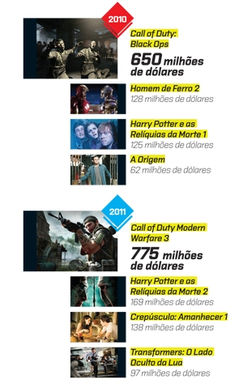

Pirataria X Games(){
Games
Por: Tassyo Tchesco !!!
O barco dos piratas pode estar afundando?
O problema de pirataria não é novo e está longe de ser mudado. Com o advento da internet, e de gravação de CD's e DVD's os games se tornaram um dos principais alvos dos piratas de plantão. De acordo com a Assespro (Associação das Empresas Brasileiras de Tecnologia da Informação) os níveis de pirataria tanto em games, tanto em softwares e em outros produtos estão alarmantes principalmente na América Latina e no Leste Europeu. Mas como contornar esse problema? Veja a seguir que a Indústria de Games está conseguindo superar a pirataria.
Internet para pirataria X Internet para diversão e lucro para Empresas

Venda do jogo Call Of Duty em relação a alguns dos filmes mais vendidos nos anos de 2010 e 2011
Uma das formas de se combater a pirataria são os jogos em rede, no qual se o jogador não tiver o jogo licenciado, ele não poderá jogá-lo em modo multiplayer. Com essa ideia inclusa, jogos como Call of Duty Black Ops em 2010 e Call of Duty Modern Warfare 3 em 2011 renderam juntos mais de 1 bilhão e meio dólares. Outra ideia é quanto a níveis e "rankings" dentro de jogos. Os jogadores que tem a versão paga do jogo, tem previlégios à aquele jogadore que utilizam uma versão pirata, fazendo com que este acabe comprando o jogo para ter melhores resultados em "rankings" e novas funcionalidades de personagens e cenários, como é o caso de games para plataformas de redes sociais, como Facebook e Orkut. Outra ideia que funcionou para os games são as famosas propagandas. O usuário para a ser obrigado a ver certos tipos de propagandas, o que acarreta no aumento de marketing de várias empresas, e gera lucro para a empresa, que DFC Intelligence, a publicidade em games vai passar de 5,7 bilhões de reais para 13,2 bilhões até 2016. Essa ideia é muito utilizada em games para smartphones e tablets.
Os preços também caíram.
Outra atividade que as indústrias perceberam é que quanto mais caro o jogo, maior será a probabilidade dele ser pirateado e não render bons lucros. Principalmente nos smartphones os preços para jogos estão cada vez mais baratos, podendo até custar cerca de 1 dólar. Com esse valor, a pirataria se torna menos atraente.
A empresa Steam especializada em jogos online, conseguiu altos índices de vendas de jogos fazendo promoções em seu sites, com descontos que levam aos jogadores a preferirem os jogos originais aos piratas. Também há opções como mensalidades para jogos onlines, o que atraem mais adeptos pela facilidade e praticidade de compra de jogos.
Referências:
}